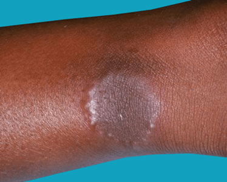

Granuloma annulare is a skin condition that most commonly consists of raised,
reddish or skin-colored bumps (lesions) that form ring patterns — usually on
your hands and feet.
No one knows exactly what causes granuloma annulare. But it may be triggered
by minor skin injuries and certain medications. Some types of granuloma annulare
affect adults, and others typically affect children.
In most cases, granuloma annulare isn't itchy or painful, so no treatment is
necessary. The lesions usually disappear on their own within two years. If you're
bothered by how your skin looks, your doctor can prescribe medications that will
speed the disappearance of the lesions.
